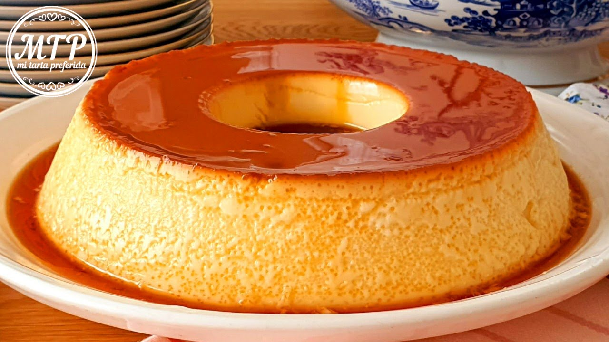

Receta para un flan casero

El flan casero es un postre clásico y delicioso que ha conquistado paladares en todo el mundo.
Su textura suave y cremosa, junto con el sabor dulce del caramelo, lo convierten en una opción perfecta para cualquier ocasión.
Esta receta tradicional es fácil de seguir y requiere ingredientes simples que probablemente ya tienes en tu cocina.
Sigue los pasos a continuación para preparar un flan casero que impresionará a tus familiares y amigos.
Ingredietes:
- 1 litro de leche
- 5 huevos
- 200 g de azúcar
- 1 cucharadita de esencia de vainilla
Instrucciones:
- Precalienta el horno a 180°C (350°F).
- En un bol grande, bate los huevos con el azúcar hasta que estén bien mezclados.
- Añade la leche y la esencia de vainilla, y mezcla bien hasta que todos los ingredientes estén integrados.
- Vierte la mezcla en el molde caramelizado.
- Coloca el molde con la mezcla en una bandeja grande y llena la bandeja con agua caliente hasta la mitad del molde (baño maría).
- Hornea durante aproximadamente 1 hora, o hasta que al insertar un cuchillo en el centro, éste salga limpio.
- Retira el molde del horno y deja enfriar a temperatura ambiente. Luego, refrigera el flan durante al menos 4 horas, o preferiblemente toda la noche.
- Para desmoldar, pasa un cuchillo por los bordes del flan, coloca un plato sobre el molde y voltea con cuidado.
¡Disfruta de tu delicioso flan casero!